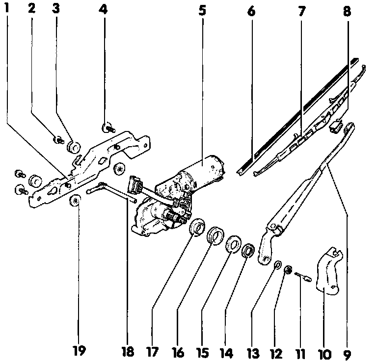

Rear Window Wiper and/or Washer System
CAUTION: Always disconnect the battery ground (GND) strap before working on the electrical system.
1- Wiper motor bracket
2- M6 bolt (5 Nm / 44 in lb)
3- Rubber washer
4- M6 bolt (5 Nm / 44 in lb)
5- Rear window wiper motor -V12-
6- Rubber wiper insert
7- Wiper blade
8- Retaining spring
9- Wiper arm
10- Cap
11- Spray nozzle
12- M8 nut (15 Nm / 11 ft lb)
13- Washer
14- M16 nut (7 Nm / 62 in lb)
15- Plastic washer
16- Rubber washer
17- Spacer ring
18- Connector tube for spray nozzle (Routed through wiper motor shaft to spray nozzle)
19- Washer